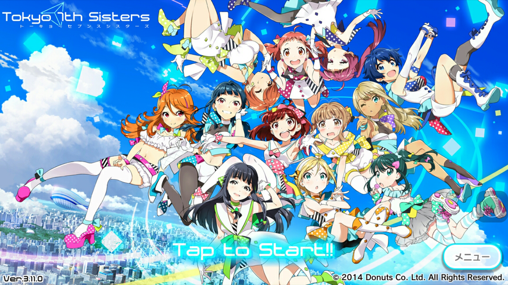

NOTE: this page is a huge WIP!
Last update: 5 July 2021
Tokyo 7th シスターズ (Tokyo 7th Sisters) or t7s for short is an idol-raising rhythm game for mobile devices. It first launched in February 2014, and is developed by an independent company, Donuts Co. Ltd. The series currently consists of the game, 7 years worth of music, live performances, an animated movie, and a few light novels, with the game and music being the main focus of the series.

I started playing t7s in about January 2016 and have been a devoted fan ever since. The Japanese community for it is small and the English-speaking one is even smaller, but my feelings for the series remain strong!
Official links
English information
Currently the game is only available in Japanese, and unfortunately it will probably stay that way due to being a lot smaller than other mobile idol games.
There are currently two main English wikis for the game: the t7s Fandom Wikia, and sisters.kouhi.me (though it seems to no longer be actively maintained). Another community is the subreddit, r/tokyo7thsisters.
There are also a few Twitter accounts that translate t7s info:
- @t7s_english, mostly translates news from the official Twitter
- Aozora Translations, mostly translates story content
- Tokyo 7th Subs, mostly translates story content
These are just the ones I know of. Please let me know if you have any other resources!
Characters
The game consists of over 50 idols spread out over 16 groups, referred to as units (with 3 girls still not in units). This may seem overwhelming, but each girl is unique and memorable!
Seventh Sisters
777☆SISTERS (Three Seven Sisters)
WITCH NUMBER 4
She is so high (SiSH)
NI+CORA
Sanbon Ribbon
HARU☆JIKA
SU♡SUTA
Le☆S☆Ca
The QUEEN of PURPLE
Ci+LUS
CASQUETTE'S
Nanabana Otome
SEASON OF LOVE
4U
KARAKURI
AXiS
Music
Gameplay
More to come soon! I just wanted to start the page lol